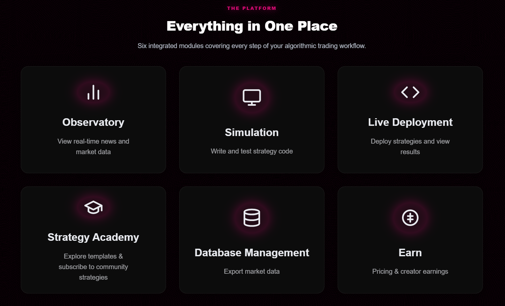

Network-Based Path Optimization for High-Frequency Cryptocurrency Arbitrage: Empirical Evidence, 2026 (preprint)
Yujia Huang
How can network topology, market microstructure, and machine learning be combined to build more efficient trading systems in traditional and decentralized markets?
Undergraduate researcher in finance and mathematics at SWUFE (RIEM). I work along three concurrent threads:
- Theory: convex optimization, stochastic processes, and numerical methods as modeling foundations
- Research: graph-based path optimization for high-frequency crypto arbitrage / microstructure
- Practice: ML-based alpha & execution, plus full-stack infrastructure for backtesting and live trading
Currently building a crypto quantitative trading platform and studying at SWUFE (RIEM) with a major in Finance, minor in Business Administration, and the Honors Program in Mathematics. Also taking Numerical Analysis (UC Berkeley & SWUFE; Instructor: Ming Gu). The strongest training so far has come from deploying real strategies, shipping full-stack systems, and iterating on research that connects theory with live markets (see below).
Research
I am interested in how network structures and topological features influence price dynamics, liquidity, and trading efficiency in secondary and decentralized financial markets. My current work applies graph theory, convex optimization, and stochastic processes to high-frequency trading and market-making problems.
Papers
Experience
I especially enjoy work that spans research, data engineering, and production deployment — from cleaning tick data to running models in live markets.
BigQuant — Quantitative Research Intern
Jul 2025 – Sep 2025
- Developed and deployed machine learning–based and high-frequency trading strategies across equities, ETFs, futures, and cryptocurrencies using GBDT models.
- Participated in the Huatai Futures platform bidding project; responsible for large-scale data cleaning, backtesting, and minute-frequency futures strategy replication.
China Blockchain Research Center — Research Intern
Jan 2024 – Apr 2024
SWUFE Blockchain Research Center
- Conducted investment research on modular Layer 2 projects like Manta; created a six-dimensional evaluation framework and formed a “cautiously optimistic” outlook.
- Analyzed on-chain data and market indicators (e.g., L2 dominance 77.2%, Celestia market cap +450%); proposed strategic asset allocation, tracked market fluctuations and ZK ecosystem developments to identify technical risks and entry opportunities, achieving live trading returns over 300%.
Projects & Engineering
Full-stack builder across frontend, backend, data pipelines, and strategy runtimes. Some projects:

Crypto Quantitative Trading Platform — Full-stack Developer
Mar 2025 – Present
Closed-source project: Built a cloud-native crypto quant platform on a self-hosted cloud server, supporting web-based and third-party agent strategy development, backtesting, live trading, and data acquisition and storage.
Responsibilities:
- Built Vue 3 web app and Electron desktop; Monaco IDE, charts, Pyodide, 12-locale i18n, dark/light themes; enabled real-time online strategy editing and backtesting.
- Developed Node.js backend (auth, strategies, deployments); integrated live-execution services.
- Built Python data pipeline with PostgreSQL hot-data reads and hybrid APIs for observation and backtest.
- Built C++ backtest and live-execution DevBox: historical/realtime APIs, sandboxed strategy execution, simulated matching, and performance/equity-curve output.
- Delivered real-time strategy performance output and personal performance analytics for live deployment tracking.
Education & Training
Southwestern University of Finance and Economics — B.Sc. Finance; Minor in Business Administration; Honors Program in Mathematics (2023–2027).
Coursework: Optimization Theory (Convex Optimization); Partial Differential Equations; Stochastic Processes; Numerical Analysis (UC Berkeley & SWUFE; Instructor: Ming Gu).
Coursera certificates: Linear Algebra, Probability & Statistics, Calculus for ML.
Skills
Programming: Python, Java, VBA, SQL (MySQL), C++, R
Other: Dune Analytics, Etherscan, and DeBank, WebSocket APIs
Languages: Mandarin (Native); English (Experienced)
Get in touch
updated 2026.7